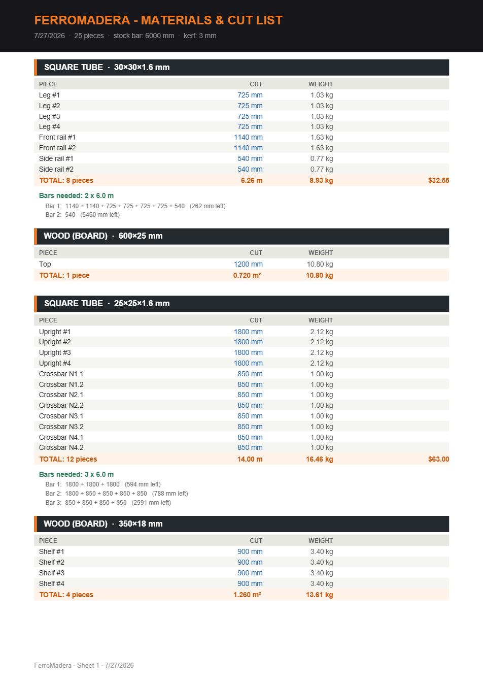

Optimización de cortes
La app distribuye todos los cortes en barras comerciales y te dice cuántas comprar y cómo cortar cada una. Configurás el largo de la barra y el espesor de corte, y ves el sobrante de cada tira y el aprovechamiento real.
